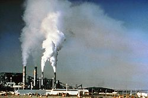

A poluição atmosférica é causada pela queima de combustíveis, o gás das indústrias,incêndios de florestas carburador de carros, e também temos as formas naturais, como raios que cairam nas florestas e começaram a queimar e produzir gases, erupções vulcânicas que é fumaça tóxica, e incêndios de florestas e carburador de carros e muito mais.
Incentivar o uso de tecnologias menos poluentes. Uso de equipamentos que reduzem os níveis de gases emitidos, dos quais podemos citar: catalisadores automotivos, filtros despoluidores nas chaminés das indústrias, Evitando o desmatamento a fogo das florestas e trocando carros a gasolina para carros eletricos,E a queima de petróleo por mineração manual
As mortes ocorrem principalmente devido à inalação dos gases e à exposição a partículas finas que penetram profundamente nos pulmões e no sistema cardiovascular, podendo causar acidentes vasculares cerebrais, doenças cardíacas, câncer de pulmão, doenças pulmonares obstrutivas crônicas e infecções respiratórias, incluindo pneumonia.
Os materias são o dióxido de nitrogênio, dióxido de enxofre, ácido nítrico, ácido sulfúrico e hidrocarbonetos são outros poluentes que contribuem para esse tipo de poluição.
É na estratosfera que se encontra a camada de ozônio, responsável por filtrar a radiação ultravioleta, nociva aos seres vivos. O ozônio é um dos gases que compõem a atmosfera. Cerca de 90% de seu volume encontra-se na estratosfera, onde 90% da radiação ultravioleta B é absorvida pela camada de ozônio.
O AirVisual Earth foi divulgado em novembro último e consiste em um globo terrestre interativo que apresenta a poluição em tempo real pairando sobre continentes e oceanos. A ferramenta detalha a presença massiva de partículas menores que 2,5 micrômetros, aquelas que são consideradas especialmente nocivas à saúde.

A poluição atmosférica refere-se a mudanças da atmosfera terrestre susceptíveis de causar impacto a nível ambiental ou de saúde humana, através da contaminação por gases, partículas sólidas, líquidos em suspensão, material biológico ou energia.[1] A adição dos contaminantes pode provocar danos diretamente na saúde humana ou no ecossistema, podendo estes danos serem causados diretamente pelos contaminantes, ou por elementos resultantes dos contaminantes.[2] Para além de prejudicar a saúde, pode igualmente reduzir a visibilidade, diminuir a intensidade da luz ou provocar odores desagradáveis.[3] Esta poluição causa ainda mais impactos no campo ambiental, tendo ação direta no aquecimento global, sendo responsável pela degradação de ecossistemas e potenciadora de chuvas ácidas. A concentração dos contaminantes reduz-se à medida que estes são dispersos na atmosfera, o que depende de fatores climatológicos, como a temperatura, a velocidade do vento, o movimento de sistemas de alta e baixa pressão e a interação destes com a topografia local, montanhas e vales por exemplo. A temperatura normalmente diminui com a altitude, mas quando uma camada de ar frio fica sob uma camada de ar quente produzindo uma inversão térmica, a dispersão ocorre muito lentamente e os contaminantes acumulam-se perto do solo. Para analisar a dispersão, recorre-se a modelos de dispersão atmosférica, que são modelos computorizados onde através de formas matemáticas complexas são simulados os comportamentos físico e químicos dos contaminantes, podendo caracterizar ou prever a ação dos mesmos no meio envolvente.[4][5] Ao longo dos tempos, a comunidade política e civil foi sendo alertada para os efeitos adversos, tendo sido assinados vários protocolos internacionais no sentido de mitigar ou resolver alguns dos problemas existentes, como o caso do protocolo de Montreal, que aboliu o uso dos CFCs, sendo considerado um dos protocolos de maior sucesso, ou ainda mais recente, o protocolo de Quioto.
Poluição atmosférica significa uma introdução antropogénica, direta ou indiretamente, de substâncias ou energia para o ar, resultando em efeitos prejudiciais de modo a pôr em perigo a saúde humana, danos nos recursos vivos e nos ecossistemas assim como nos bens materiais, pôr em risco ou prejudicar os valores estéticos e as outras legítimas utilizações do ambiente.[6] A influência dos contaminantes, ou substâncias poluentes, no grau de poluição depende da sua composição química, concentração na massa de ar ou mesmo dependendo das condições climatéricas, que podem influenciar a sua dissipação, ou os mecanismos relacionados com reações que podem dar origem a novos poluentes.[7]
A atmosfera da Terra é uma camada de gases em redor do planeta Terra, mantida pela gravidade da Terra. É um sistema natural dinâmico e complexo, que protege a vida na Terra, absorvendo radiação solar ultravioleta, aquecendo a superfície através da retenção de calor, o conhecido efeito de estufa, e reduz os extremos de temperatura entre dia e noite. A análise das suas camadas é fundamental para a compreensão da dispersão dos poluentes atmosféricos, assim como das suas reações.[21][4] As camadas mais importantes no âmbito da poluição atmosférica são a troposfera e a estratosfera.[22]
A camada mais próxima à superfície da Terra é conhecida como a troposfera, que se estende do nível do mar a uma altura de cerca de 18 km e contém cerca de 80 por cento da massa da atmosfera global.[23] Esta camada é dividida em subcamadas, de acordo com as suas especificidades. A parte mais baixa da troposfera é chamada Camada Limite Atmosférica (CLA) ou na camada limite planetária (CLP) e estende-se desde a superfície da Terra até cerca de 1,5 a 2,0 km de altura. Nesta camada, a temperatura média varia entre 20 °C na parte inferior a -60 °C na parte superior, ou seja, diminui com o aumento da altitude até atingir o que se chama a camada de inversão, onde a temperatura passa a aumentar com o aumento da altitude, e que cobre a camada limite atmosférica. A parte superior da troposfera, ou seja, acima da camada de inversão,é chamada de troposfera livre e estende-se até cerca de 18 km do início da troposfera. É na troposfera que se verificam os fenómenos atmosféricos, e grande parte dos fenómenos associados à poluição atmosférica.
A estratosfera é a segunda maior camada da atmosfera da Terra, logo acima da troposfera, e abaixo da mesosfera. Apresenta estratificação na temperatura, com as camadas superiores mais quentes e as camadas inferiores mais frias. Isto está em contraste com a troposfera, próximo à superfície da Terra, que é mais frio nas zonas altas e mais quente à superfície terrestre. A fronteira da troposfera com a estratosfera, é a tropopausa, onde se verifica essa inversão térmica. A estratosfera situa-se entre cerca de 10 km e 50 km de altitude acima da superfície nas latitudes moderada, enquanto nos pólos começa em cerca de 7 km de altitude. É nesta camada que se encontra a camada de ozônio, entre os 15 e os 35 km.
Os contaminantes do ar provêm de diversas fontes, como fábricas, centrais termoeléctricas, veículos motorizados, no caso de emissões provocadas pela atividade humana, podendo igualmente provir de meios naturais, como no caso de incêndios florestais, ou das poeiras dos desertos.[29] Os poluentes são normalmente classificados como primários ou secundários.[30] Poluentes primários são os contaminantes diretamente emitidos no ambiente,[31] como no caso dos gases dos automóveis, e os secundários resultam de reações dos poluentes primários na atmosfera.[32] Neste caso, o ozono troposférico (O3), resultante de reações fotoquímicas entre os óxidos de azoto, monóxido de carbono ou compostos orgânicos voláteis (COV).
Os compostos orgânicos voláteis (COV) são produtos químicos orgânicos que facilmente evaporam à temperatura ambiente, como o metano, benzeno, xileno, propano e butano. São chamados orgânicos porque contêm o elemento carbono nas suas estruturas moleculares, e são de especial preocupação, pois na presença do sol, sofrem reações fotoquímicas que podem originar ozono ou smog.
Os poluentes atmosféricos tóxicos, são os poluentes que são conhecidos ou suspeitos de serem uma séria ameaça para a saúde humana e o ambiente. Na lista de poluentes tóxicos, constam dioxinas, aamianto, tolueno e metais como cádmio, mercúrio, cromo e compostos de chumbo. A exposição a poluentes tóxicos podem produzir vários efeitos a curto prazo e, ou efeitos crónicos, a longo prazo. Os efeitos agudos incluem irritação dos olhos, náuseas, ou dificuldade em respirar, enquanto os efeitos crónicos incluem danos aos sistemas respiratório e nervoso, defeitos de nascimento, efeitos reprodutivos e cancro. O tipo e a gravidade do efeito é determinado pela toxicidade do poluente, a quantidade de poluentes, a duração e a frequência de exposição, e da saúde geral e nível de resistência ou susceptibilidade da pessoa exposta.
A poluição atmosférica causa impactos negativos na saúde humana, cujo grau de incidência e de perigosidade depende do nível de poluição, assim como dos poluentes envolvidos. Os problemas com maior expressão são ao nível do sistema respiratório e cardiovascular. Estudos recentes mostram que crianças sujeitas a níveis elevados de poluição atmosférica têm maior prevalência de sintomas respiratórios, sofrem uma diminuição da capacidade pulmonar com um aumento de episódios de doença respiratória. Estudos efetuados em três países, Áustria, França e Suíça, demonstram que a poluição atmosférica é responsável por 6% das mortes ocorridas anualmente no conjunto desses países, sendo que metade dessas mortes deve-se a poluição rodoviária. Alerta ainda para o facto de 4 000 pessoas morrerem por ano devido aos efeitos da poluição atmosférica, e que cerca de 25 000 dos casos de ataque de asma anuais têm como origem precisamente na exposição aos poluentes atmosféricos. Tudo isto causa impactos nas finanças, sendo que os esforços do sistema de saúde rondam 1,7% do seu PIB. Já nas grandes cidades da Ásia e América do Sul, provoca vitimas de problemas respiratórios e cardíacos, infecções pulmonares e cancro, sendo o valor de vítimas mortais a rondar os 2 milhões. Estas cidades albergam cerca de metade da população mundial, esperando-se que atinja os dois terços em meados de 2030.